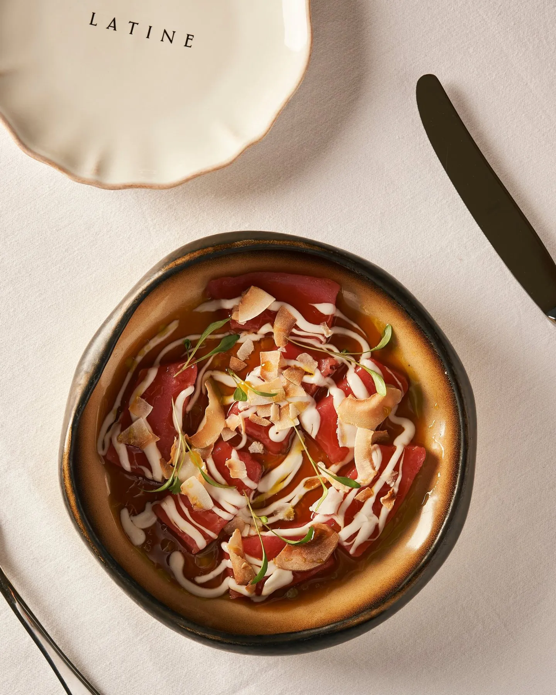
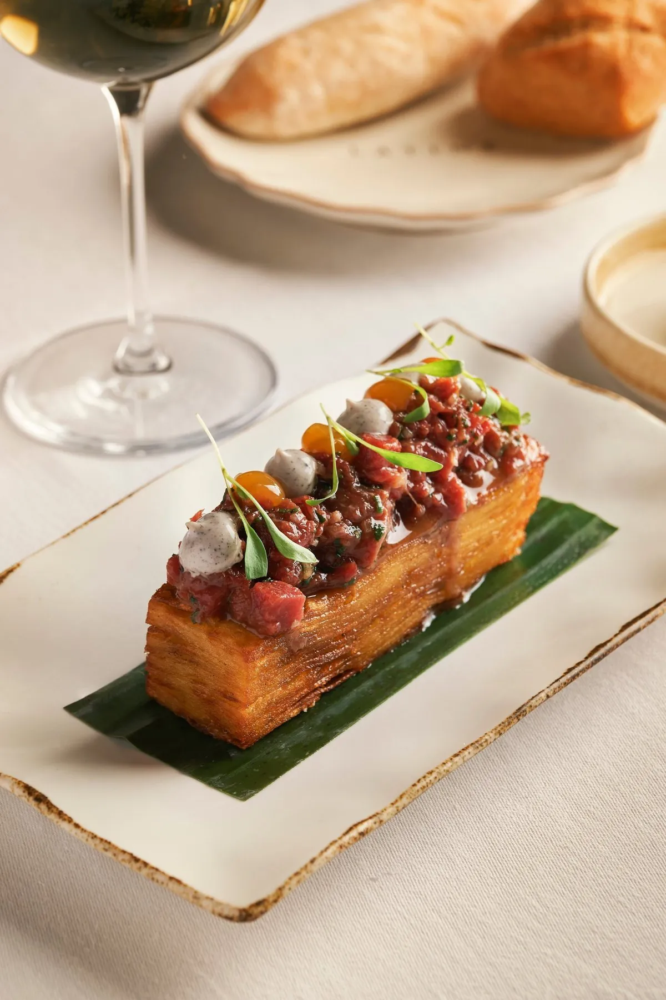
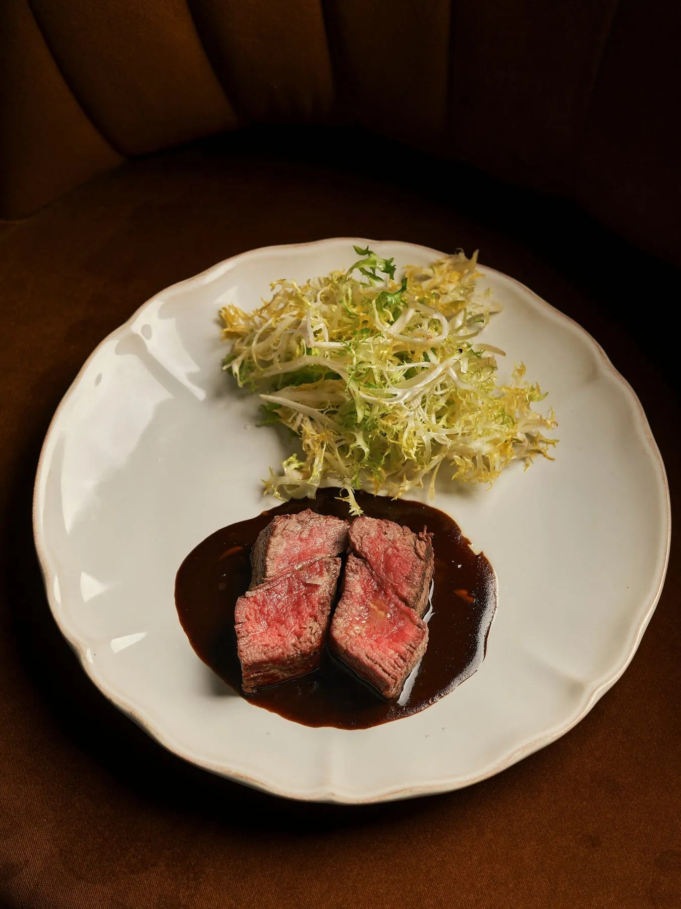

Latine
Find us
10–11 Lancashire Court
Mayfair, London W1S 1EY
Hours
Mon – Sat, 12pm – midnight
020 3887 3126
Two festive menus, oysters and Champagne, and a night that carries on upstairs at La Candela.



New Year enquiries
Tell us your preferred date, numbers and plans, and our events team will come back to you with availability.
Questions
There are two festive menus: £75 per person and £120 per person. Six oysters can be added to either for £26. Prices include VAT, and a discretionary 13.5% service charge is added to the bill.
Up to 8 guests can book a table online. For larger groups, use the enquiry form above, call us on 020 3887 3126 or email contact@latinemayfair.com with your date and numbers.
Yes. Both menus have a vegetarian choice among the crudo, starters and mains. Let us know about any dietary requirements or allergies when you book, and remind our team on arrival.
Yes. El Cielo, our private room on the second floor, seats up to 20 or holds over 40 for a standing reception. Send us an enquiry with your date and numbers.
Yes. La Candela on the first floor turns into a lounge with DJs, cocktails and Champagne as the evening goes on.
Cookies
We use cookies to understand how our website is used and to measure our advertising. You choose: accept all, reject everything that is not essential, or pick. See our privacy policy.
Your choices